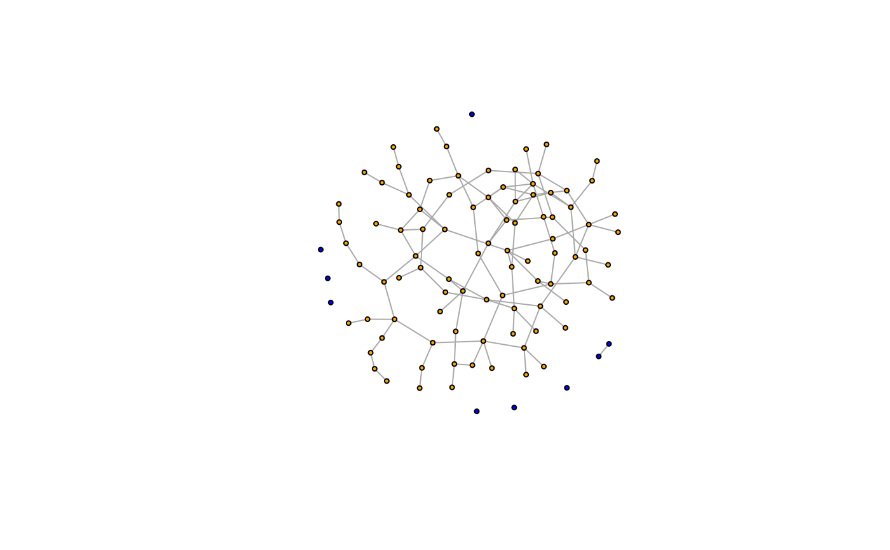

Query or set attributes of the vertices in a vertex sequence
Source:R/iterators.R
igraph-vs-attributes.RdThe $ operator is a syntactic sugar to query and set the
attributes of the vertices in a vertex sequence.
Usage
# S3 method for class 'igraph.vs'
x[[i]] <- value
# S3 method for class 'igraph.vs'
x[i] <- value
# S3 method for class 'igraph.vs'
x$name
# S3 method for class 'igraph.vs'
x$name <- value
V(x) <- valueValue
A vector or list, containing the values of
attribute name for the vertices in the vertex sequence.
For numeric, character or logical attributes, it is a vector of the
appropriate type, otherwise it is a list.
Details
The query form of $ is a shortcut for
vertex_attr(), e.g. V(g)[idx]$attr is equivalent
to vertex_attr(g, attr, V(g)[idx]).
The assignment form of $ is a shortcut for
set_vertex_attr(), e.g. V(g)[idx]$attr <- value is
equivalent to g <- set_vertex_attr(g, attr, V(g)[idx], value).
See also
Other vertex and edge sequences:
E(),
V(),
as_ids(),
igraph-es-attributes,
igraph-es-indexing,
igraph-es-indexing2,
igraph-vs-indexing,
igraph-vs-indexing2,
print.igraph.es(),
print.igraph.vs()
Vertex, edge and graph attributes
delete_edge_attr(),
delete_graph_attr(),
delete_vertex_attr(),
edge_attr(),
edge_attr<-(),
edge_attr_names(),
graph_attr(),
graph_attr<-(),
graph_attr_names(),
igraph-attribute-combination,
igraph-dollar,
set_edge_attr(),
set_graph_attr(),
set_vertex_attr(),
vertex_attr(),
vertex_attr<-(),
vertex_attr_names()
Examples
g <- make_(
ring(10),
with_vertex_(
name = LETTERS[1:10],
color = sample(1:2, 10, replace = TRUE)
)
)
V(g)$name
#> [1] "A" "B" "C" "D" "E" "F" "G" "H" "I" "J"
V(g)$color
#> [1] 2 2 1 1 1 1 2 1 1 2
V(g)$frame.color <- V(g)$color
# color vertices of the largest component
largest_comp <- function(graph) {
cl <- components(graph)
V(graph)[which.max(cl$csize) == cl$membership]
}
g <- sample_(
gnp(100, 2 / 100),
with_vertex_(size = 3, label = ""),
with_graph_(layout = layout_with_fr)
)
giant_v <- largest_comp(g)
V(g)$color <- "blue"
V(g)[giant_v]$color <- "orange"
plot(g)
